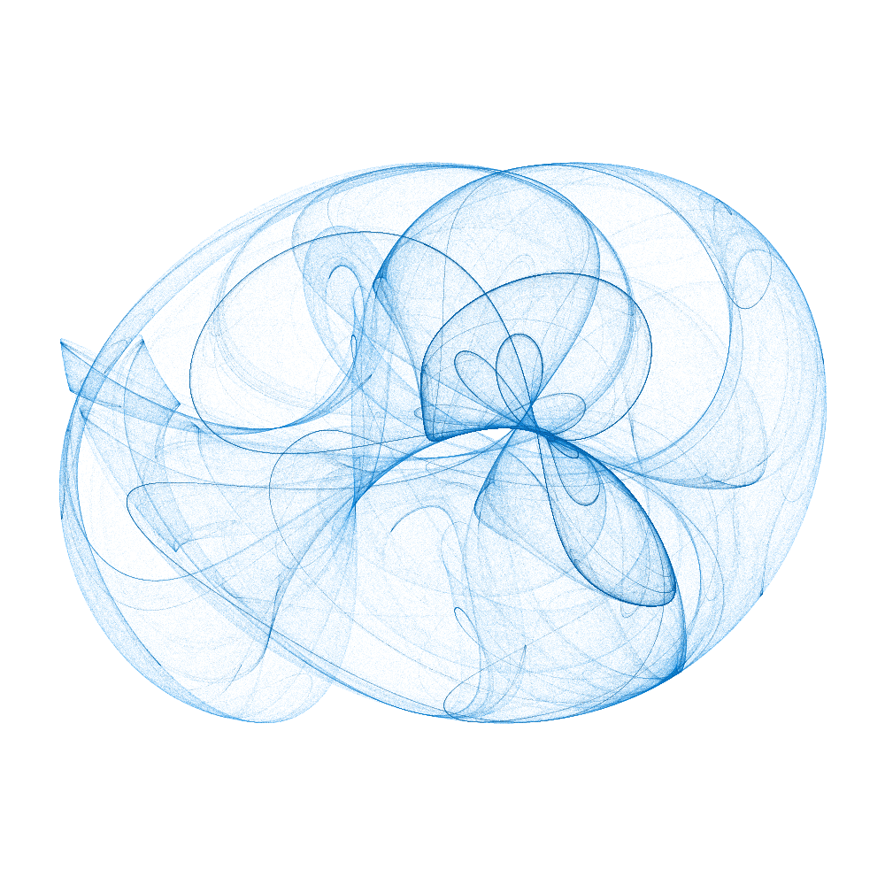
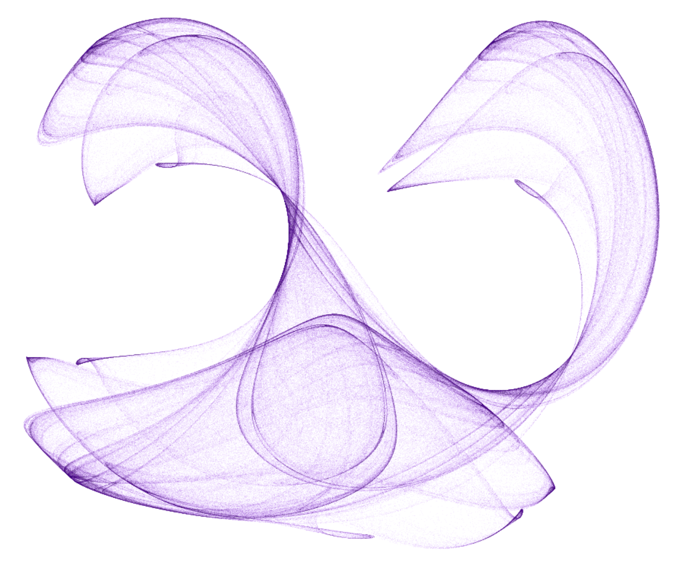

Atraktory - teoria chaosu¶
Atraktory to tajemnicze obiekty, które kryją się w sercu teorii chaosu. Są matematycznymi bytami, które przyciągają trajektorie układów dynamicznych, tworząc fascynujące wzory i struktury. W świecie dwuwymiarowym możemy odkryć całą gamę atrakcyjnych atraktorów, takich jak atraktor Clifforda, Mapowanie Martina, atraktor De Jong i inne.
Wyobraź sobie układ dynamiczny, który ewoluuje w czasie, tworząc skomplikowane wzory. Atraktor to punkt lub zbiór punktów, do których układ dąży asymptotycznie. Innymi słowy, atraktor jest magnesem, który przyciąga trajektorie układu. Atraktory mogą mieć różne kształty i struktury, od prostych punktów po skomplikowane fraktale.
Atraktor Clifforda to jeden z najbardziej znanych przykładów atraktora. Jest to dwuwymiarowy atraktor, który powstaje w wyniku iteracji prostego równania. Rezultatem jest piękny, zawiły wzór, który wykazuje symetrię i samopodobieństwo. Poniżej przedstawiony jest przykładowy atraktor Clifforda.

Atraktory są tworzone wedle konkretnego wzoru, pod który podstawiamy różne paremetry. W zależności od tych parametrów możemy uzyskać inne struktury (rysunki). Poniżej przykład atraktora Clifforda dla innych parametrów niż wcześniej.

A oto wzór, wedle którego są generowane powyższe rysunki:
W powyższym wzorze \(a, b, c, d\) są wspomnianymi wcześniej paremetrami, pod które możemy podstawiać różne liczby rzeczywiste. Natomiast \(x, y\) są współrzędnymi rysowanego punktu. Jak widać, współrzędne w kolejnym kroku \((x_{n+1}, y_{n+1})\) są obliczane na podstawie współrzędnych z poprzedniego kroku \((x_n, y_n)\).
Wszystkie atraktory mają jedną wspólną cechę - są one niezwykle wrażliwe na warunki początkowe. To znaczy, że nawet najmniejsza zmiana w parametrach może prowadzić do zupełnie różnych wyników.
Teoria chaosu, która opisuje zachowanie układów dynamicznych, jest ściśle związana z atraktorami. Chaos deterministyczny oznacza, że układ jest deterministyczny, ale jego zachowanie jest nieprzewidywalne ze względu na wrażliwość na warunki początkowe. Atraktory są kluczowym elementem teorii chaosu, ponieważ pomagają zrozumieć, jak układy dynamiczne ewoluują w czasie.
Opis projektu¶
W ramach projektu stworzona została strona internetowa, dostępna pod adresem https://attractors.cs-htiew.com/, na której można generować rysunki wspomnianych wcześniej atraktorów. Do wyboru jest kilka różnych atraktorów, a każdy posiada swój unikalny wygląd i wzór. Za pomocą prostego interfejsu można modyfikować parametry początkowe i obserwować, jak to wpływa na tworzący się na żywo rysunek. Ponieważ ciężko może być wybrać takie parametry, by uzyskać zadowalający efekt, przygotowanych zostało kilka gotowych przykładów, które można wybrać z listy.
Projekt został napisany z wykorzystaniem JavaScript + HTML.
Eksperymentuj i baw się obserwując chaos w akcji.
Autor projektu¶
Damian Kurpiewski - GitHub - Strona osobista